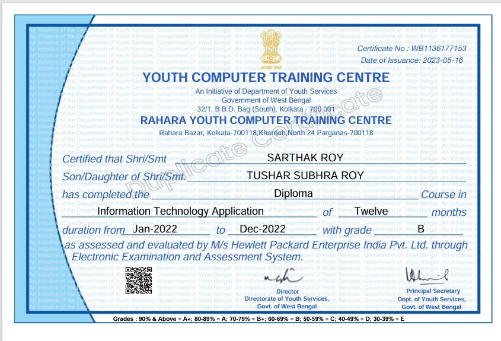
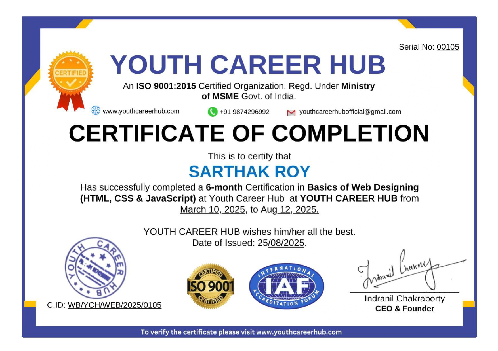
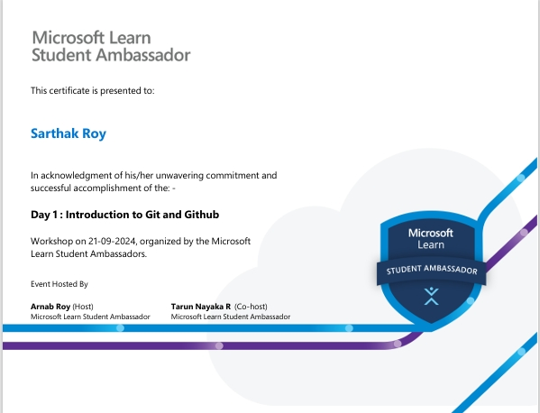
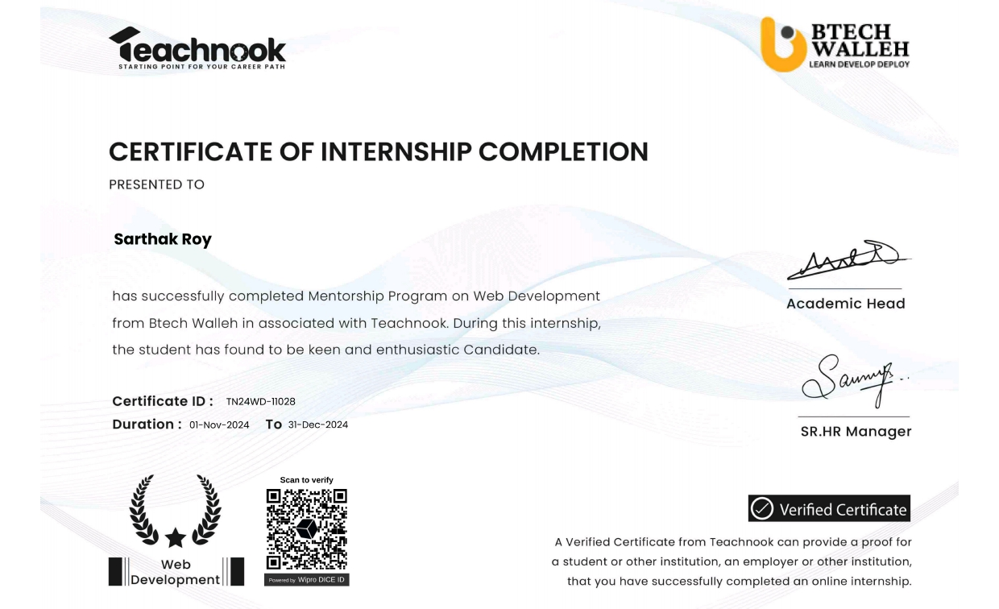
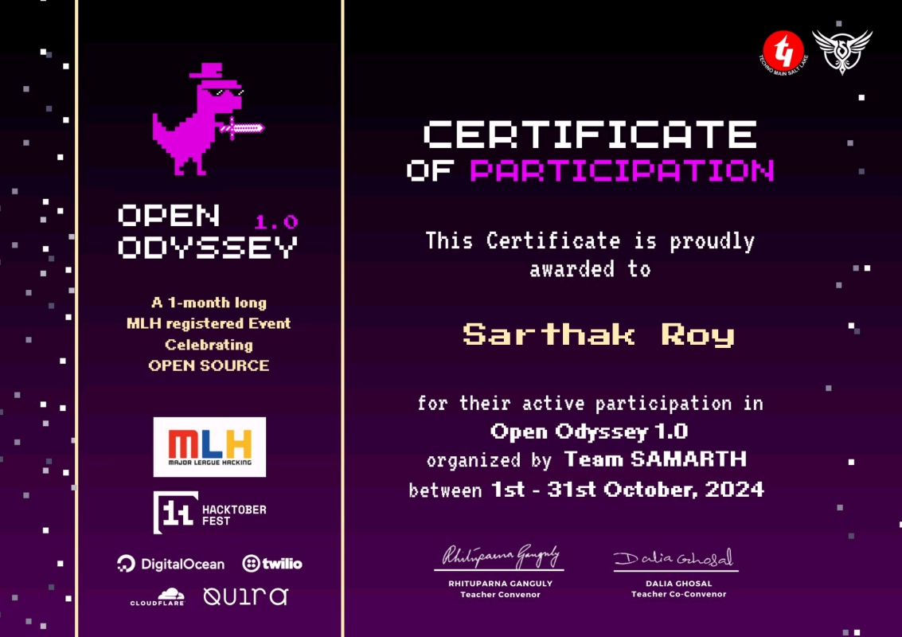
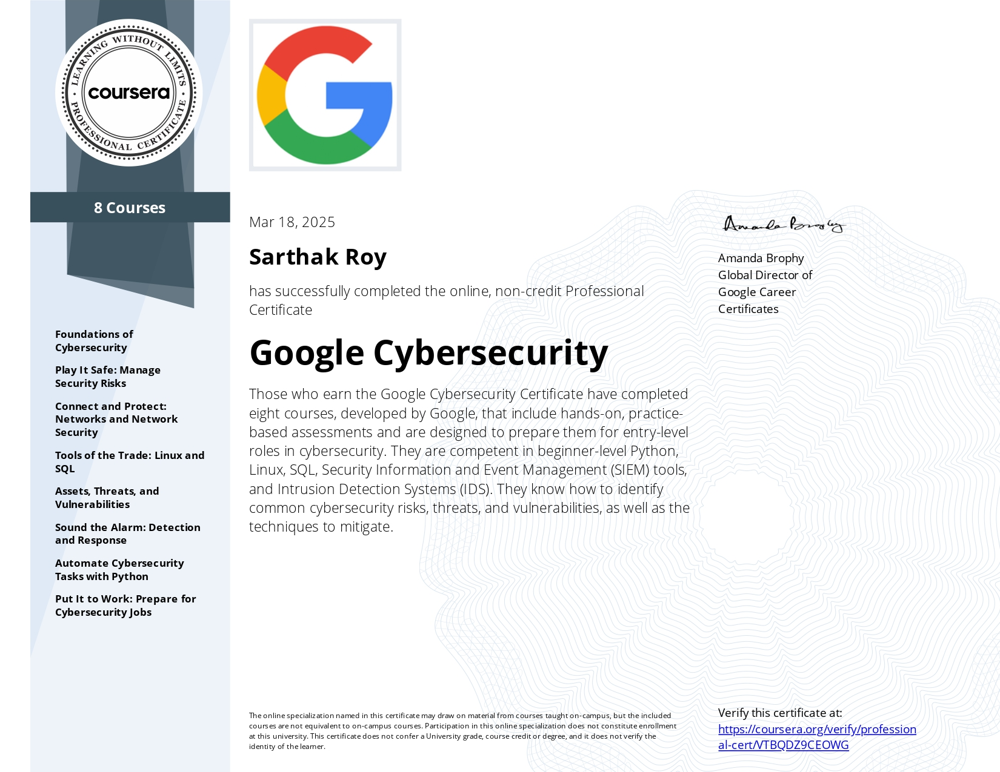

Completed a comprehensive course on Information Technology (DITA), learning MsS-Office 2007, Database Management Syatem (Visual Fox Pro, Programming Concepts-Algorithm & Flow Cgarting, Visual Basic, RDBMS concepts with MS-Access

Completed a 6-month certification in Basics of Web Designing (HTML, CSS & JavaScript) from Youth Career Hub, gaining foundational knowledge in front-end web development.

Introduction to Version Control:Understand the concept of version control and why it is essential for developers.Learn how Git helps in managing code efficiently across teams and projects.Learn Git from scratch and understand its importance in software development. Get hands-on experience with GitHub, the go-to platform for collaborative coding.Prepare yourself for working on team projects or open-source contributions.

Completed a Web Development Mentorship Internship with Teachnook (in association with Btech Walleh). Gained hands-on exposure to basic web development concepts and page structure. Demonstrated enthusiasm, willingness to learn, and consistency during the internship period.

Participated in Open Odyssey 1.0, an MLH-registered open-source event organized by Team SAMARTH.Gained exposure to open-source fundamentals and community-based collaboration.

Completed the Google Cybersecurity Professional Certificate on Coursera, gaining foundational knowledge of cybersecurity concepts, risks, and basic security practices.